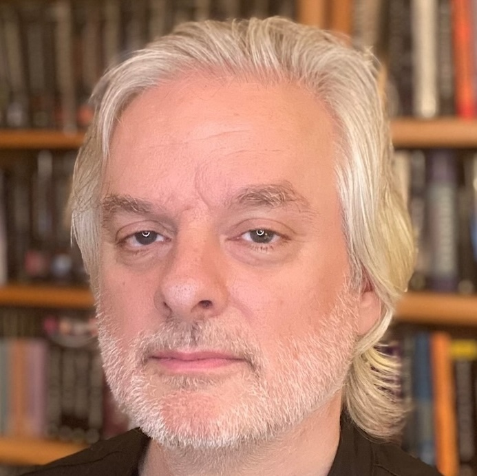
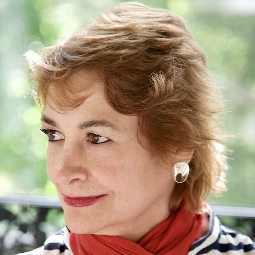
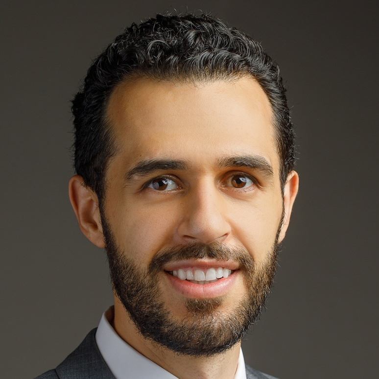
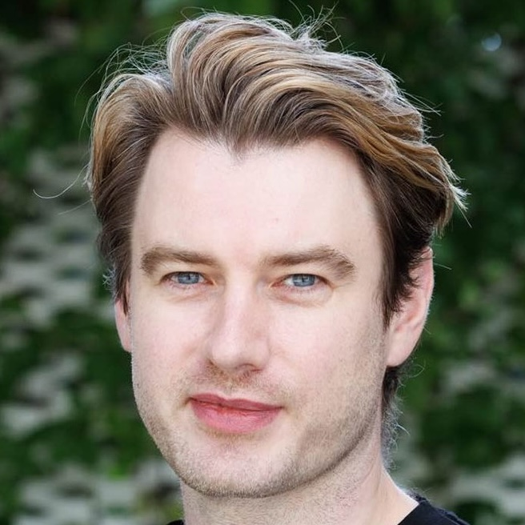
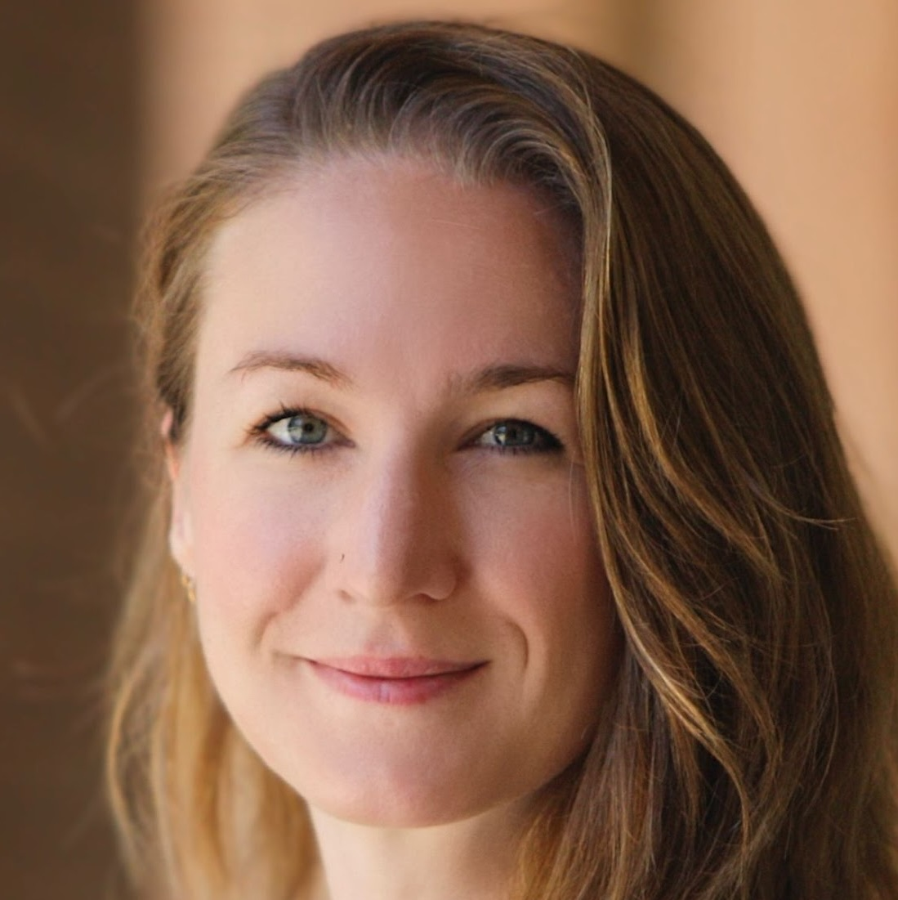
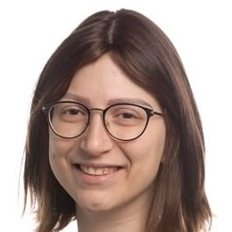

David Chalmers
New York University
Philosophy KeynoteCCN 2026 Satellite Event
Bringing computational modelling, neuroscience, and philosophy together to understand conscious experience. Hosted and sponsored by the NYU Center for Mind, Brain, and Consciousness.
A recent explosion of interest in computational models of consciousness comes both from our attempts to extend computational models of perception and cognition to their subjective aspects and from the importance of consciousness to the ethical implications of AI models. The meeting examined computational approaches to consciousness from the perspectives of philosophy, psychology, and neuroscience, with keynotes from David Chalmers (philosophy), Marisa Carrasco (psychology), and Biyu He (neuroscience). Additional talks highlight the role of computational models in understanding change-blindness, iconic memory, spatial perception, and visual illusions, and in helping us to develop new measures of conscious awareness. A closing panel discussion explores future directions for the emerging discipline of computational consciousness science.

New York University
Philosophy Keynote
New York University
Psychology KeynoteNew York University
Neuroscience KeynoteMIT

National Institutes of Health

Columbia University
MIT

UC Irvine + UCL
Harvard University

Columbia University